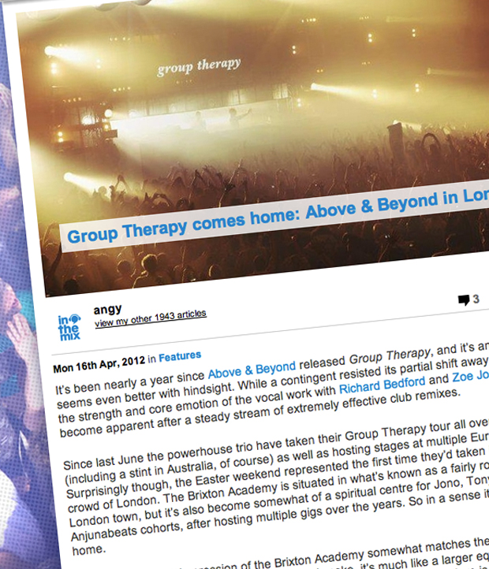

Group Therapy comes home: Above & Beyond in London
{kind=link}

It’s been nearly a year since Above & Beyond released Group Therapy, and it’s an album that seems even better with hindsight. While a contingent resisted its partial shift away from club trance, the strength and core emotion of the vocal work with Richard Bedford and Zoe Johnston has become apparent after a steady stream of extremely effective club remixes.
Since last June the powerhouse trio have taken their Group Therapy tour all over the world (including a stint in Australia, of course) as well as hosting stages at multiple European festivals. Surprisingly though, the Easter weekend represented the first time they’d taken it to their home crowd of London. The Brixton Academy is situated in what’s known as a fairly rough end of ol’ London town, but it’s also become somewhat of a spiritual centre for Jono, Tony, Paavo and their Anjunabeats cohorts, after hosting multiple gigs over the years. So in a sense it was like coming home.
Walking in, the first impression of the Brixton Academy somewhat matches the reputation of the neighborhood it’s situated in. For comparison’s sake, it’s much like a larger equivalent of Sydney fixture The Enmore, though the charm of its early 20th-century architecture is countered by the decades of punter sweat that seems to hover in the air, lacquer the walls and stick to the carpet.
The antiquated sound system sends a menacing rumble through the room that falls short of the crisp high-ends ideal for main room trance, though it’s hard not to warm to its charms after a couple of hours, as it’s perfect for generating the kind of hands-in-the-air, “avin’ it” kind of atmosphere that quickly develops.
The evening’s warm-up DJs seem intent though on smashing the energy through the ceiling from the moment the doors open. Anjuna prodigy Mat Zo is one of dance music’s most cutting-edge new producers, regardless of genre, and before his set on Sunday night he’d announced on Facebook he was preparing edits of a few trance classics that had defined his early clubbing years. Henceforth, the sounds were probably a little too banging from the get-go.
This was even more the case when Dutch class act Sander van Doorn stepped up next. Last time I’d seen him was at Cocoon in Ibiza where he’d delivered an absolutely impeccably deep opening set that built beautifully into mainroom trance, but last weekend though, he was banging out a set not a lot different from the peaktime insanity of his recent ASOT550 set at Ultra Music Festival in Miami. Free of subtlety, he’s basically throwing out everything he’s got (including the kitchen sink) at an admittedly receptive crowd.
Retreating to the Anjunadeep lounge in the foyer, James Grant was laying down some sexy progressive grooves, and this was where the night really got started. There was a modest but extremely appreciative crowd who were really up for what was being heard, and ironically, one of the evening’s biggest highs came with a play of Andrew Bayer’s stunning You; the tune’s deep basslines and luscious melancholy bringing the emotion in the room to a peak.
Aussie expat Jaytech pulled off a similar trick later on with some of his own prog bombs, the hypnotic builds of In The Jungle and the giddy chord progressions of Paradox, and it was the perfect counter to the trance explosions being heard in the main room.
When all three members of Above & Beyond finally arrived onstage at 1:30am, there was enough of a shift in the sounds and production to indicate the headliners had arrived. The set was introduced by the soft, cinematic chords of their own Tokyo, the same pensive vibes that opened the recentAnjunabeats Vol. 9 compilation, and the same intertwined ribbons that adorn the cover of Group Therapy were projected on the visual screens, with the added visual effect of several of the ribbons rendered via colored lights projecting out into the crowd. It was a dramatic and emotional start that definitely set the tone in terms of adding a “concert” vibe to the proceedings.
The intro might have been measured, but after that it was full-force into peaktime tunes, in a set that bore a few striking similarities to their recent TATW #400 show in Beirut. The big guns were brought out quickly with a tingling build-up and sing-along of the mash-up of Eric Prydz’s 2Night with the Oceanlabclassic Breaking Tides. It was one of many carefully planned ‘moments’ during the set that the crowd had no hesitation in joyously playing along with (and those who attended the Australian shows will be familiar with the ‘push the button’ moment during Sun & The Moon, where a member of the audience helps usher in the song’s strings).
Justine Suissa’s vocals received a predictably strong reaction, but similarly, uplifting moments also came thick and fast from the likes of Norin & Rad, whose new single Bloom would have to be one of the best euphoric trance anthems heard in a long time. The rumbling bassline that opens gives way to a proper ‘hero’ melody in the chorus, and the roaring build-up delivered that classic rush of energy that’s so characteristic of big-room trance.
Naturally, the Group Therapy album weighed heavily on the set, again reinforcing the impression this was more of a ‘concert’ style tour. “Are you ready for some Group Therapy?” the crowd was asked early on via a text read-out on the visual screens, and its vocal offerings all had an impressive emotional impact; perhaps more than anyone might have predicted upon the album’s initial release.
Zoe Johnston’s lyrics in the latest single Love Is Not Enough were achingly affecting, and though they were suitably toughened up for the occasion with a Maor Levi remix, their ode to relationship breakups still proved its mettle as one of the strongest trance vocals heard in years; differentiated from the pack by evoking genuine emotion. “This is not yours alone, it hurts me too/ Please don’t say you don’t care, I know you do.”
Alongside the fluffiness though, there were pleasing servings of bass-fuelled ‘grunt’, heard early inHeatbeat’s heavy-duty remix of Parker & Hanson’s Afterthought, the sad piano twinkles in the breakdown following through with a slamming, glitchy bassline that’d be worthy of one of Simon Patterson’s tech-charged anthems. Similarly, Jerome Isma-Ae’s slamming techno drop in Speedignited a roar in the crowd, while Maor Levi & Bluestone’s brutal On Our Own inspired a similar whoosh of energy towards the ceiling of the Brixton Academy.
And otherwise, peppered amongst the euphoric centerpieces like Group Therapy’s premium trance moment Prelude, there were plenty of other tougher moments to be enjoyed. Mat Zo had taken it down the pumping route earlier on, but it was the hypnotic charms of his unreleased gem Loop that brought one of the most unexpected moments during A&B’s set, the crunchy rhythms taking things as close to the rougher-edges of techno as the set would go.
Elsewhere, the rubbery tech-house bassline of Zo’s mix of Be There 4 You had the floor stomping. The track epitomises the ‘lighter’ side that’s begun to shine from a some of the better trance being released, allowing it to break free of the contrived melodrama dragging the genre down elsewhere, and it was a vibe that featured heavily in Above & Beyond’s London set.
Something that’s an unmistakable consequence of A&B playing at the top of a very high musical peak, and not coming down for the entire performance, is there’s no more room for the measured builds that used to characterise their extended sets. The soft progressive charms of Signalrunners’Meet Me In Montauk was a trademark that warmed their sets on their 2008 Australian tour, though nowadays they’re not drawing as widely from the wider spectrum of their Anjunabeats and Anjunadeep labels. There was also a sense of the set being pre-planned to coincide with the spectacle, removing some of the dynamics you get from a traditional DJ set that more emphatically works with the energy of the crowd.
Putting this aside though, and looking in terms of a ‘concert style’ extravaganza, Group Therapydelivers in spades, especially with the full force of the production at the Brixton Academy gig. The two-and-a-half hours were packed with plenty of other emotionally-charged moments; the boys were certainly trigger happy on the keyboard, tapping out messages to the crowd like, “This is our favourite view of London”, and urging you to show love to the person beside you.
As much as you might try though to resist the sentiments, the positivity and good vibes beaming from Jono, Tony and Paavo were just so utterly genuine that resistance was futile. Group Therapy London showed that Above & Beyond are still the very best that the big-league of trance has to offer in 2012.